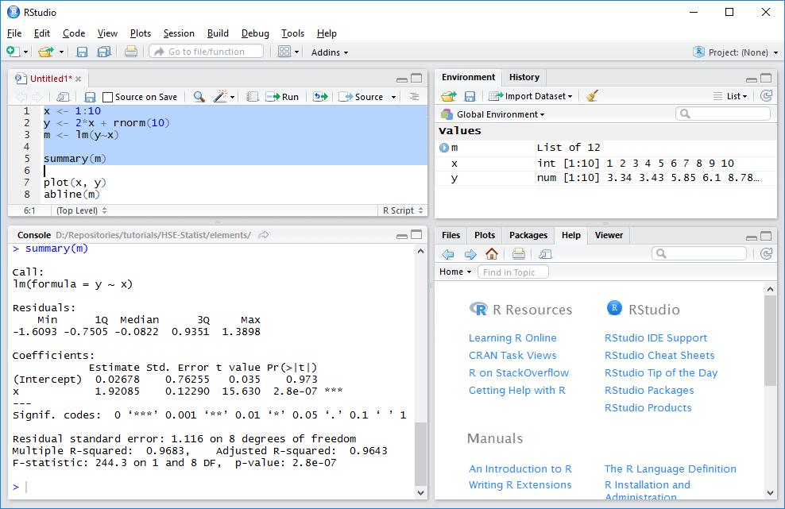
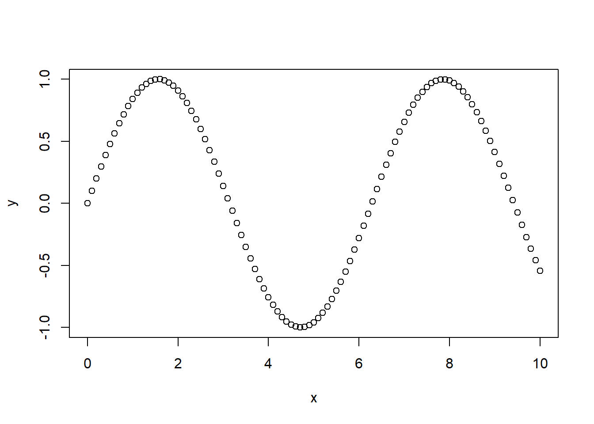
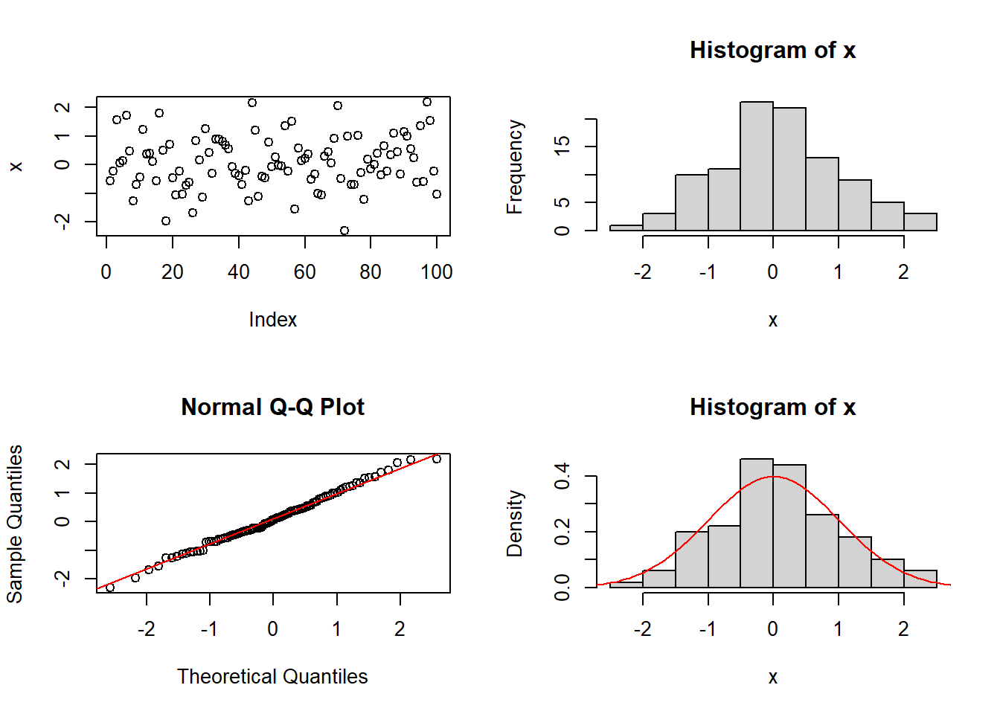
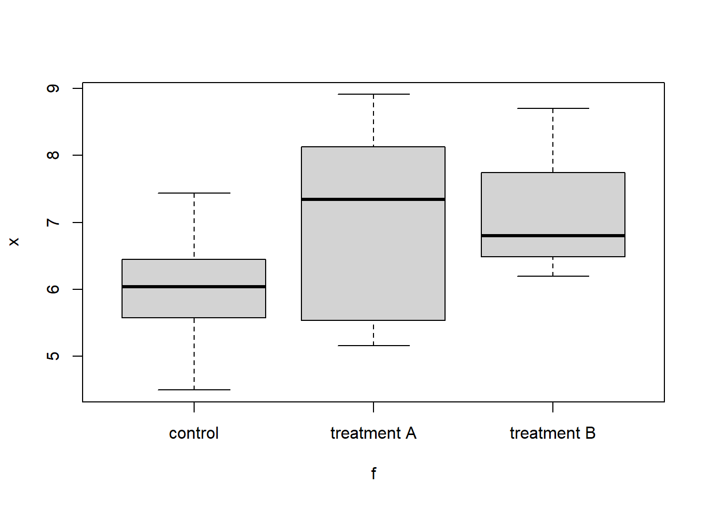
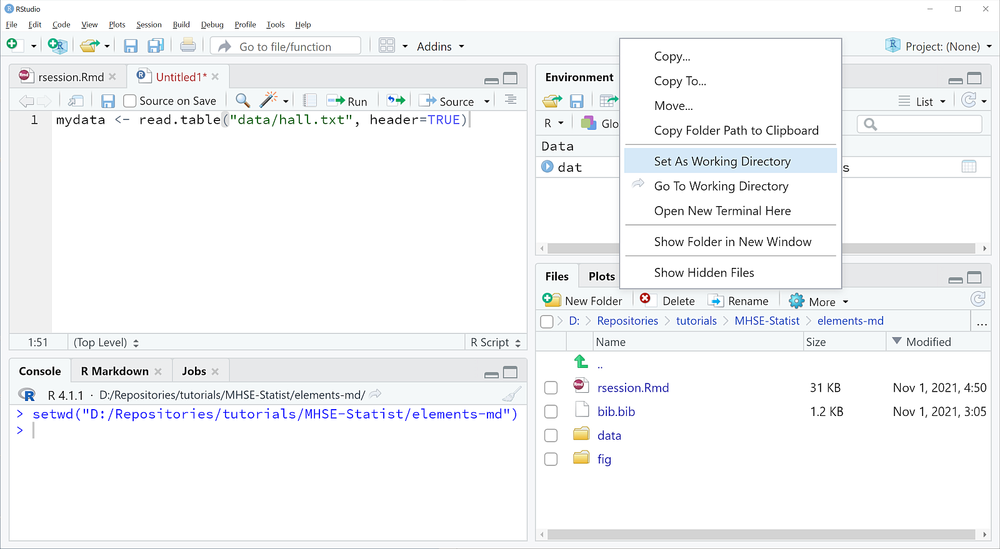
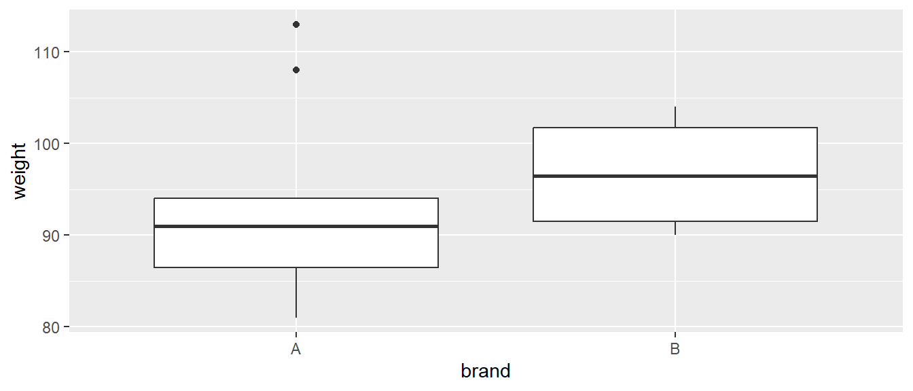
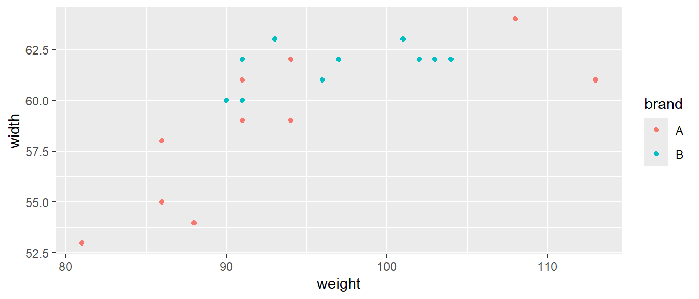
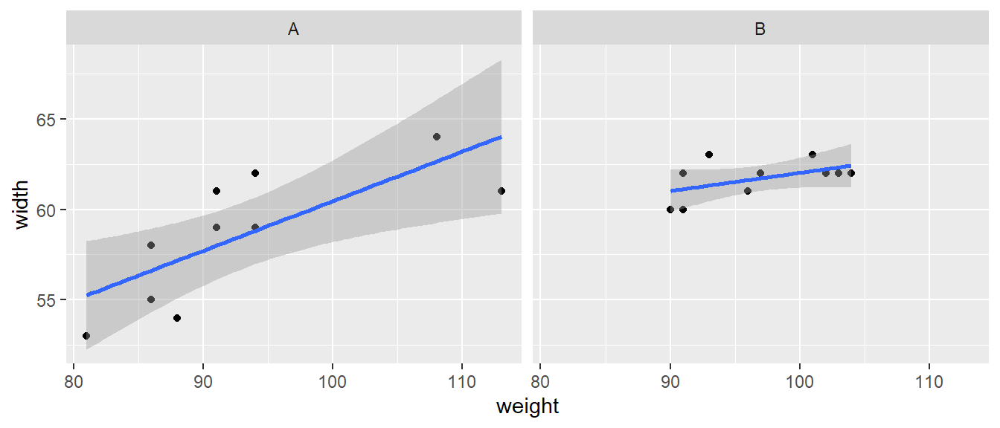

2 + 4An Introductory R Session
Applied Statistics – A Practical Course
This tutorial is available in HTML format for screen reading and PDF for printing.
1 Introduction
The following section is intended to give you a first feeling what R (R Core Team, 2021) is and how it works. It assumes that the following software is installed:
- The R system for statistical computing: https://www.r-project.org
- R Studio, a program that makes working with R more convenient: https://www.rstudio.org
Note: please install R first before installing RStudio.
You may also consider to watch a Youtube video about R, a good example for the very beginning is the short video “R tutorial - The True Basics of R” from DataCamp, see https://youtu.be/SWxoJqTqo08. Besides this, Datacamp offers excellent R tutorials, part of them free of cost. Another useful R tutorial can be found at W3Schools.com.
2 First Steps
2.1 Program start and help system
The easiest way to learn R is the creative understanding and modification of given examples, the usage of R for solving practical problems and the diagnosis of the frequently occurring problems and error messages. Don’t worry: error messages are a normal phenomenon in scientific computing and not an indication of a dysfunction of the computer or the human brain. The opposite is true, a certain amount of stress hormones helps to acquire permanent learning effects. Then, after a certain level of experience reading the official R-Documentation “An Introduction to R” (Venables et al., 2021). or any good R-book is strongly recommended.
The first sections of this “crash course” are intended to give an overview over some of the most important elements of R and an insight into a typical work flow, that may be useful for the first statistical analyses and as a starting point for self-education.
We begin our first session by starting RStudio, a platform independent interface that makes working with R easier. RStudio divides the screen into 3 (resp. 4) windows (called panes), where some of them have additional tabs to switch between different views.

Figure 1: R Studio with 4 panes. Use File – New R Script to open the the source code pane (shown top left). Then enter some code and don’t forget to explore the help files.
In a fresh RStudio session, one “Pane” should be the main help page of R. It is a good idea to browse a little bit around to get an impression about the amount and the typical style of the available help topics. The most important sections are “An Introduction to R”, “Search Engine & Keywords”, “Packages”, the “Frequently Asked Questions” and possibly “R Data Import/Export”.
We start now to explore the R-System itself.
2.2 R as a pocket calculator
Entering an arithmetic expression like this:
shows that R can be used as a pocket calculator, that immediately outputs the result:
[1] 6Instead of printing the result to the screen, it is also possible to save the result into a named variable using the assignment operator “<-”.
a <- 2 + 4It seems that nothing happens, but the result is now saved in the variable a that can be recalled at any time by entering the variable name alone:
aVariable names in R start always with a character (or for special purposes a dot), followed by further characters, numerals, dots or underscores, where a distinction is made between small and capital letters, i.e. the variables value, Value and VALUE can contain different data. A few character combinations are reserved words and cannot be used as variables:
break, for, function, if, in, next, repeat, while and “...” (three dots).
Other identifiers like plot can be re-defined, but this should be done with care to avoid unwanted confusion and side effects.
2.3 Vectors
You may have noticed, that the output of the example above had a leading [1], which means that the line begins with the first element of a. This brings us to a very important feature of R that variables can contain more than single values: vectors, matrices, lists, data frames (tables) and so on.
The most basic data type is the vector, that can be filled with data using the c (combine) function:
values <- c(2, 3, 5, 7, 8.3, 10)
values[1] 2.0 3.0 5.0 7.0 8.3 10.0To create a sequence of values, one can use the : (colon):
x <- 1:10
xor, even more flexibly the seq function:
x <- seq(2, 4, 0.25)
xSequences of repeated equal values can be obtained with rep:
x <- rep(2, 4)
x2.4 Exercise
There are many ways to use these functions, try for example:
seq(0, 10)
seq(0, 10, by = 2)
seq(0, pi, length = 12)
rep(c(0, 1, 2, 4, 9), times = 5)
rep(c(0, 1, 2, 4, 9), each = 2)
rep(c(0, 1, 2, 4, 9), each = 2, times = 5)2.5 Access to vector elements
Instead of accessing vectors as a whole, it is also possible to extract single elements, where the index of the requested data is itself a vector:
values[5]
values[2:4]
values[c(1, 3, 5)]Sometimes, elements of a vector may have individual names, which makes it easy to access them:
named <- c(a = 1, b = 2.3, c = 4.5)
named
named["a"]In R (and in contrast to other languages like C/C++) vector indices start with 1. Negative indices are also possible, but they have the special purpose to delete one or several elements:
values[-3]It is also possible to extend a given vector by preceding or appending values with the combine function (c):
c(1, 1, values, 0, 0)The length of a vector can be determined with:
length(values)and it is also possible to have empty vectors, i.e. vectors that exist, but do not contain any values. Here the keyword NULL means “nothing” in contrast to “0” (zero) that has length 1:
values <- NULL
values
length(values)Such empty vectors are sometimes used as “containers” for appending data step by step:
values <- NULL
values
length(values)
values <- c(values, 1)
values
values <- c(values, 1.34)
valuesIf a data element should be removed completely, this can be done using the remove function:
rm(values)
values
Error: Object "values" not foundThe complete workspace can be deleted from the menu of R or RStudio (Session – Clear workspace) or from the command line with rm (remove):
rm(list = ls(all = TRUE))The R session can be closed by using the menu as usual or by entering:
q()Sometimes and depending of the configuration, R asks whether the “R workspace” should be saved to the disk. This may be useful for continuing work at a later time, but has the risk to clutter the workspace and to get irreproducible results at a later session, so it is recommended to say “No” for now, except if you exactly know why.
Later we will learn how to save only the data (and commands) that are needed.
3 Graphics
3.1 R as function plotter
Now, we will see how to use R as a function plotter by drawing sine or cosine functions within an interval between 0 to 10. First, we create two vectors with x and y. To obtain a smooth curve, it is reasonable to choose a small step size. As a rule of thumb I always recommend to use about 100…400 small steps as a good compromise between smoothness and memory requirements, so let’s set the step size to 0.1:
x <- seq(0, 10, 0.1)
y <- sin(x)
plot(x, y)
Instead of plotting points, we can also draw continuous lines. This is indicated by supplying an optional argument type = "l".
Note: the symbol used here for type is the small letter “L” for “line” and not the – in printing very similar – numeral “1” (one)!
We see also, that optional arguments like type can be given as “keyword = value” pair. This has the advantage that the order of arguments does not matter, because arguments are referenced by their name:
plot(x, y, type = "l")Now we want to add a cosine function with another color. This can be done with one of the function lines or points, for adding lines or points to an existing figure:
y1 <- cos(x)
lines(x, y1, col = "red")With the help of text it is also possible to add arbitrary text, by specifying first the x and y coordinates and then the text:
x1 <- 1:10
text(x1, sin(x1), x1, col = "green")Many options exist to modify the behavior of most graphics functions so the following specifies user-defined coordinate limits (xlim, ylim), axis labels and a heading (xlab, ylab, main).
plot(x, y, xlim = c(-10, 10), ylim = c(-2, 2),
xlab = "x-Values", ylab = "y-Values", main = "Example Graphics")Code formatting and line breaks
The above example shows a rather long command that may not fit on a single line. In such cases, R displays a + (plus sign) to indicate that a command must be continued, e.g. because a closing parenthesis or a closing quote is still missing. Such a + at the beginning of a line is an automatic “prompt” similar to the ordinary > prompt and must never be typed in manually. If, however, the + continuation prompt occurs by accident, press “ESC” to cancel this mode.
In contrast to the long line continuation prompt, it is also possible to write several commands on one line, separated by a semi-colon “;”. This is unseful in some cases, but as a general rule it is much better to use the script editor and then to:
- write each command to a separate line
- avoid long lines with more than about 80 characters
- use proper indentation, e.g. 2 characters per indentation level
- use spacing to improve readability of the code, e.g. before and after the assignment operator
<-.
Finally, a number symbol (or hash) # means that a complete line or the part of the line that follows # is a comment and should be ignored by R.
3.2 Additional plotting options
In order to explore the wealth of graphical functions, you may now have a more extensive look into the online help, especially regarding ?plot or ?plot.default, and you should experiment a little bit with different plotting parameters, like lty, pch, lwd, type, log etc. R contains uncountable possibilities to get full control over the style and content of your graphics, e.g. with user-specified axes (axis), legends (legend) or user-defined lines and areas (abline, rect, polygon). The general style of figures like (font size, margins, line width) can be influenced with the par function.
3.3 High level plotting functions
In addition, R and its packages contain numerous “high level”-graphics functions for specific purposes. To demonstrate a few, we first generate a data set with normally distributed random numbers (mean = 0, standard deviation sd = 1), then we plot them and create a histogram. Here, the function par(mfrow = c(2, 2)) divides the plotting area into 2 rows and 2 columns to show 4 separate figures:
par(mfrow = c(2, 2))
x <- rnorm(100)
plot(x)
hist(x)Now, we add a so-called normal probability plot and a second histogram with relative frequencies together with the bell-shaped density curve of the standard normal distribution. The optional argument probability = TRUE makes sure that the histogram has the same scaling as the density function, so that both can be overlayed:
qqnorm(x)
qqline(x, col = "red")
hist(x, probability = TRUE)
xx <- seq(-3, 3, 0.1)
lines(xx, dnorm(xx, 0, 1), col = "red")
Here it may also be a good chance to do a little bit summary statistics like: z.B. mean(x), var(x), sd(x), range(x), summary(x), min(x), max(x), …
Or we may consider to test if the generated random numbers x are approximately normal distributed using the Shapiro-Wilks-W-Test:
x <- rnorm(100)
shapiro.test(x)A p-value bigger than 0.05 tells us that the test has no objections against normal distribution of the data. The concrete results may differ, because x contains random numbers, so it makes sense to repeat this several times. It can be also useful compare these normally distributed random numbers generated with rnorm with uniformly distributed random numbers generated with runif:
par(mfrow=c(2,2))
y <- runif(100)
plot(y)
hist(y)
qqnorm(y)
qqline(y, col="red")
mean(y)
var(y)
min(y)
max(y)
hist(y, probability=TRUE)
yy <- seq(min(y), max(y), length = 50)
lines(yy, dnorm(yy, mean(y), sd(y)), col = "red")
shapiro.test(y)At the end, we compare the pattern of both data sets with box-and-whisker plots:
par(mfrow=c(1, 1))
boxplot(x, y)3.4 Exercises
Repeat this example with new random numbers and vary sample size (n), mean value (mean) and standard deviation (sd) for random numbers created with rnorm, and use different min and max for runif. Consult the help pages for an explanation of the functions and its arguments, and create boxplots with different data sets.
4 Basic Data Structures of R
In addition to vectors, R contains several other classes of objects for saving data, e.g. matrix, array, list or data.frame. Both, “base R” and contributed packages contain many more classes. It is also possible to define own user-defined classes.
Under certain circumstances some of data types can be converted into each other, e.g. by using functions like as.matrix, as.vector, as.data.frame and so on.
4.1 Numeric and character vectors
All data objects have the two built-in attributes mode (data type) and length (number of data in the object).
Modes can be “numeric” for calculations or “character” for text elements.
x <- c(1, 3, 4, 5) # numeric
a <- c("hello", "world") # characterThe following is also a character variable, because the numbers are given in quotes. It is then not possible to do calculations:
x <- c("1", "3", "4", "5") # character
sum(x)
Error in sum(x) : invalid 'type' (character) of argumentHere it is necessary to convert the character to numeric first:
y <- as.numeric(x)
sum(y)[1] 9.0405914.2 Factors
A special kind of mode is factor. This is, statistically speaking, a nominal variable that appears like characters, e.g. “control”, “treatment A”, “treatment B” …, but its levels are internally encoded as integer.
Here a typical example with three factor levels. In a first step,let’s create a character variable:
text <- rep(c("control", "treatment A", "treatment B"), each=5)
text [1] "control" "control" "control" "control" "control"
[6] "treatment A" "treatment A" "treatment A" "treatment A" "treatment A"
[11] "treatment B" "treatment B" "treatment B" "treatment B" "treatment B"and then convert it to a factor:
f <- factor(text)
f [1] control control control control control treatment A
[7] treatment A treatment A treatment A treatment A treatment B treatment B
[13] treatment B treatment B treatment B
Levels: control treatment A treatment BWe se that the character variable is printed with quotes and the factor without quotes, but with an additional information about the Levels. The reason for this is, that the factor is internally encoded as integer values with assigned levels as a translation table:
levels(f)[1] "control" "treatment A" "treatment B"To show encoding, we can convert the factor into an integer
as.integer(f) [1] 1 1 1 1 1 2 2 2 2 2 3 3 3 3 3The encoding is done in alphabetical order by default. It can be changed by using an additional levels argument:
f2 <- factor(text, levels=c("treatment A", "treatment B", "control"))
f2 [1] control control control control control treatment A
[7] treatment A treatment A treatment A treatment A treatment B treatment B
[13] treatment B treatment B treatment B
Levels: treatment A treatment B controlas.numeric(f2) [1] 3 3 3 3 3 1 1 1 1 1 2 2 2 2 2Factors are useful for statistical analyses like ANOVA and statistical tests, and also as categories for plotting:
x <- c(7.44, 6.45, 6.04, 5.58, 4.5, 8.13, 5.54, 7.34, 8.91, 5.16, 8.7, 7.74, 6.8, 6.49, 6.2)
plot(x ~ f)
We see that a boxplot is created and no x-y-plot, because the explanation variable is a factor.
Numeric variables (especially ordinal) can also be converted to factors. This is useful, if we want to make clear, that numbers are to be treated as name without order.
However, conversion of such factors back into numeric variables types should be done with care, because a character “123” may be encoded with another value (e.g. 1) and not 123, see the following demonstration of a correct and wrong factor conversions:
x <- c(2, 4, 6, 5, 8)
f <- as.factor(x)
as.numeric(f) # wrong !!!
as.numeric(as.character(f)) # correct
as.numeric(levels(f))[f] # even betterSuch a factor coding is not specific to R and appears also in other statistics packages. Then they are sometimes called “dummy variables”.
4.3 Matrices and arrays
A matrix is a two-dimensional data structure that can be used for matrix algebra. To create a matrix, we can first create a one-dimensional vector and then reformat it as two-dimensional matrix with nrow rows and ncolcolumns:
x <- 1:20
x
y <- matrix(x, nrow = 5, ncol = 4)
yWe see that the matrix is filled rowwise. We can also convert it back to a vector:
as.vector(y) # flattens the matrix to a vectorAn array extends the matrix concept to more than two dimensions:
x <- array(1:24, dim=c(3, 4, 2))Vectors, matrices and arrays have an important limitation: they can only contain one data type (mode), either numeric or character. So, if a single element is of type character, the whole matrix will be of mode character and appears in quotes:
x <- c(1, 2, 5, 2, "a")
mode(x)
x4.4 Lists
The most flexible data type of R is the list. It can contain arbitrary data of different modes. Lists can be nested to form a tree-like structure:
l <- list(x = 1:3, y = c(1,2,3,4), a = "hello", L = list(x = 1, y = 2))Lists are extremely powerful and flexible and may be discussed later. The impatient may have a look at the tutorial of w3schools.com.
4.5 Data frames
The typical data structure for data analysis in R is the so-called data.frame. It can contain both, columns with numeric data and columns of mode character. Some packages use ando extended versions of data frames, a so called tibbles.
A data frame can be constructed from scratch directly in the R code or read from a file or the internet. As an example, students were asked in different years for their favorite number from one to 9. The results can be put in a data frame like follows:
favnum <- data.frame(
favorite = 1:9,
obs2019 = c(1, 1, 6, 2, 2, 5, 8, 6, 3),
obs2020 = c(1, 2, 8, 1, 2, 2, 20, 2, 4),
obs2021 = c(2, 6, 8, 1, 6, 4, 13, 2, 4),
obs2022 = c(2, 3, 7, 8, 2, 10, 12, 6, 1)
) 5 Entering Data
Several different methods exist to input data into R. The most important are extensively explained in a special manual R Data Import/Export and we want to show only a selection here:
- direct input in the R code (see example above)
- input from a text file
- input from a spreadsheet file (LibreOffice or Excel)
- input from a text file on the internet
- input from a data base
Furthermore, it is possible to import of data from other statistics packages like SPSS, SAS or Stata (library(foreign)), reading of GIS-Shapefiles (library(shapefiles)), and to read even sound files or pictures.
5.1 Direct input
We used this method already when creating vectors with the c (combine)-Function:
x <- c(1, 2, 5, 7, 3, 4, 5, 8)
xIn the same way it is possible to create other data types like data frames:
dat <- data.frame(f = c("a", "a", "a", "b", "b", "b"),
x = c(1, 4, 3, 3, 5, 7)
)
dator matrices:
A <- matrix(c(1:9), nrow=3)
AWe see that a matrix is not much different from a vector, formatted into rows and columns.
5.2 Read data from a text file
R has very flexible functions to read data from text files. Let’s for example use a table that contains some data from a lake area in north-eastern Germany (Table 1).
Table 1: Morphometrical and chemical properties of selected lakes (S=Stechlinsee, NN=Nehmitzsee Nord, NS=Nehmitzsee Süd, BL=Breiter Luzin, SL = Schmaler Luzin, DA = Dagowsee, HS = Feldberger Haussee; z=mean depth (m), t=theoretical retention time (a), P=phosphorus concentration (\(\mathrm{\mu g L^{-1}}\)), N=nitrogen concentration (\(\mathrm{mg L{^-1}}\)), Chl=chlorophyll concentration (\(\mathrm{\mu g L^{-1}}\)), PP=annual primary production (\(\mathrm{g C m^{-2} a^{-1}}\)), SD = secchi depth (m)). The data are an adapted and simplified “toy version” taken from Casper (1985) and Koschel & Scheffler (1985).
| Lake | z | t | P | N | Chl | PP | SD |
|---|---|---|---|---|---|---|---|
| S | 23.7 | 40 | 2.5 | 0.20 | 0.7 | 95 | 8.4 |
| NN | 5.9 | 10 | 2.0 | 0.20 | 1.1 | 140 | 7.4 |
| NS | 7.1 | 10 | 2.5 | 0.10 | 0.9 | 145 | 6.5 |
| BL | 25.2 | 17 | 50.0 | 0.10 | 6.1 | 210 | 3.8 |
| SL | 7.8 | 2 | 30.0 | 0.10 | 4.7 | 200 | 3.7 |
| DA | 5.0 | 4 | 100.0 | 0.50 | 14.9 | 250 | 1.9 |
| HS | 6.3 | 4 | 1150.0 | 0.75 | 17.5 | 420 | 1.6 |
The data can be downloaded from https://github.com/tpetzoldt/datasets/tree/main/data
5.2.1 Set working directory
R needs to know where to find the data on your computer. One way is to provide the full path to the data set, e.g. if it is c:/users/<username>/documents, then
lakes <- read.csv("c:/users/julia/documents/lakes.csv")This can be cumbersome and error-prone, so the preferred method is to set the working directory of R to the data directory. This can be done in RStudio like follows:
- Locate the folder with the data in the “Files” pane
- Select “More”
- Select “Set As Working Directory”
 Figure2: Setting the working directory in RStudio
After this, data can be retrieved directly from the working directory :
lakes <- read.csv("lakes.csv", header=TRUE)We may also consider to create a sub-folder data of the working direktory and put the data in. Then we could use for example:
lakes <- read.csv("../data/lakes.csv", header=TRUE)Note also that we use always the ordinary slash “/” and not the backslash “\”, even on Windows.
In some countries that have the comma and not the dot as a decimal separator and then for example a semicolon as column separator, additional arguments dec = ",", sep=";" may be required. The details are found on the read.table help page.
5.3 Read data from the internet
If the data are available on an internet server, it can be read directly from there:
lakes <- read.csv("https://raw.githubusercontent.com/tpetzoldt/datasets/main/data/lakes.csv")Now, as the data are saved in the data frame lakes it is possible to access them as usual:
lakes
summary(lakes)
boxplot(lakes[-1])Here summary shows a quick overview and boxplot creates a boxplot for all columns except the first, that contains no numbers.
Now, we are ready to inspect the content of this new variable lakes. If we use RStudio a View can be invoked by clicking to lakes in the environment window.
5.4 “Import Dataset” in RStudio
RStudio contains a handy feature that makes importing of data more convenient. Essentially, this “Import Dataset” wizard helps us to construct the correct read.table, read.csv or read_delim function interactively. It is possible to try different options until a satisfying result is obtained. Current versions of RStudio contain several different ways to import data. Here we demonstrate the “Import Dataset From Text (readr)” assistant:
- From the menu select: File – Import DataSet – From CSV.
- Select the requested file and select suitable options like the name of the variable the data are to be assigned to, the delimiter character (comma or Tab) and whether the first row of the file contains variable names.

Import Dataset From Text (readr) assistant of RStudio.
Hint: In the exmple above, the name of the data frame is identical to the file name, i.e. “lakes”. If we want to name it differently (e.g.: dat), we must not forget to change this setting.
Note also that the Code Preview contains the commands that the wizard created. If we copy these commands to the script pane, you can re-read the data several times without going back to the menu system:
library(readr)
lakes <- read_csv("D:/DATA/lakes.csv")
View(lakes)6 Working with Dataframes
6.1 Display the content of the data frame
The easiest way is to just enter the name of the data frame to the R console, e.g.:
lakesor to click to the name of the data frame in the “Environment” explorer of RStudio. This executes then View(lakes), so that the data are shown.
For large tables it is often not very useful to display the full content with View, so it may be better to use the function str (structure) that gives a compact overview over type, size and content of a variable:
str(mydata)The str function is universal and also suitable for complicated object types like lists. Of course, there are many more possibilities for inspecting the content of a variable:
names(lakes)
mode(lakes)
length(lakes)and sometimes even:
plot(lakes)6.2 Access single columns with $
Single columns of a data frame can be accessed by using indices (with []) similar to a vector or a matrix or by using the column name and the $) operator:
mean(lakes[,2])
mean(lakes$z)
mean(lakes[,"z"])
mean(lakes[["z"]])
plot(lakes$z, lakes$t)where z is the mean depth of the lakes and t the so-called mean residence time.
We should also nitice the subtle difference of the output of the [] and the [[]]- version. The difference is as follows: single brackets return a data frame with one column, but double square brackets return the content of the column as a vector without the caption.
Warning: In some older books, the $-style is sometimes abbreviated using the attach and detach-functions. This “prehistoric relict” is strongly discouraged, as it can lead to data inconsistency and strange errors. If you find it somewhere where it is still used, then it is a good idea to use detach repeatedly until an error message confirms us that there is nothing else that can be detached. Finally: never use attach/detach in a package.
Instead, it is much better to use another function width, that opens the data frame only temporarily:
with(lakes, plot(z, t))6.3 Subsets and logical indices
In the following, we use another data set that we read directly from the internet:
fruits <- read.csv("https://raw.githubusercontent.com/tpetzoldt/datasets/main/data/clementines.csv")It contains weight, width and height measurements of two brands of Clementine fruits. After loading the data, we look at it with View(fruits) or the Environment explorer of Rstudio
A very powerful feature of R is the use of logical vectors as “indices”, with similar results like data base queries. As an example, we can show the weight of all fruits of brand “A” with
fruits[fruits$brand == "A", c("brand", "weight")] brand weight
6 A 81
7 A 113
8 A 94
9 A 86
10 A 108
11 A 91
12 A 94
13 A 86
14 A 91
15 A 88Here the first indext in the square brackets indicates the subset of rows that we want and the second argument the columns. If we want to see all columns, we leave the argument after the comma empty:
fruits[fruits$brand == "A", ] id no brand weight width height
6 6 7 A 81 53 54
7 7 8 A 113 61 60
8 8 9 A 94 62 49
9 9 3 A 86 58 53
10 10 6 A 108 64 50
11 11 1 A 91 59 51
12 12 10 A 94 59 51
13 13 4 A 86 55 55
14 14 2 A 91 61 51
15 15 5 A 88 54 55A logical comparison requires always a double “==”. Logical operations like & (and) and | (or) are also possible. Note that “and” has always precedence before “or”, except this is changed with parenthesis.
A subset of a data frame can also be extracted with the subset function:
brand_B <- subset(fruits, brand == "B")
brand_BLike in the example before, the condition argument allows also logical expressions with & (and) and | (or).
We can also access single elements in matrix-like manner.
The element from the 2nd row and the 4th column can be selected with:
fruits[2, 4]the complete 5th row with:
fruits[5, ]and rows 5:10 of the 4th column (weight) with:
fruits[5:10, 4]Additional methods for working with matrices, data frames and lists can be found in R textbooks or in the official R documentation.
7 Outlook
7.1 Pipelines and summaries
The last examples are intended to demonstrate how powerful a single line can be in R. How to analyse data sets evolved over the history of R, so there is for example a function aggregate to compute statistics (e.g. mean values) depending on given criteria.
This works well and is still used, but the modern methods are more compact and easier to understand. Here let’s introduce a modern concept first, that is called “pipelining”. The idea is, that the result of a function is directly pipelined to another function, so instead of writing:
brand_B <- subset(fruits, brand == "B")
columns_B <- brand_B[c("weight", "width", "height")]
means_B <- colMeans(columns_B)
means_Bwe can directly write:
library("dplyr")
fruits |> filter(brand == "B") |> select(weight, width, height) |> colMeans()Here we load an add-on package dplyr first, that contains a lot of helpful functions for data management, for example filter that selects rows and select that selects columns. The pipeline operator |> pipes then the data set fruitsto the filter- function and subsequently to the next. The “native pipeline operator” |> was introduced with R 4.1. As an alternative we can also use the %>% pipeline operator, that is loaded by the dplyr package. Its function would be identical in this case.
Two other extremely useful dplyr functions are group_by and summary, that allow to calculate arbitrary summary statistics in dependence of grouping variables. If we use the brand for grouping, we can summarize all groups simultaneously:
fruits |>
group_by(brand) |>
summarise(mean(weight), mean(width), mean(height))The summarize line above can still be made better, and there plenty of other stunning possibilities, so we will come back to this later.
7.2 Output of Results
The most simple method to save outputs from R is to copy it directly from the R console to any other program (e.g. LibreOffice, Microsoft Word or Powerpoint) via the Clipboard. This is convenient, but cannot be automated. Therefore, it is better to use a programmatic approach.
Let’s use the example before and store the results in a new data frame results:
results <-
fruits |>
group_by(brand) |>
summarise(mean(weight), mean(width), mean(height))Data frames can be saved as text files with write.table, write.csv or write_csv. Here we use write_csv (with underscore, not dot) from package readr:
library("readr")
write_csv(results, file="output-data.csv")In addition to these basic functions R has a wealth of possibilities to save output and data for later use in reports and presentations. All of them are of course documented in the online help, e.g. print, print.table, cat for text files, and pdf, png for figures. The add-on packages xtable contains functions for creating LaTeX or HTML-tables while full HTML output is supported by the R2HTML or knitr packages.
7.3 Plots with ggplot2
In addition to the plot functions we used so far, other plot packages exist, for example lattice or ggplot2. Here a few small examples with the very popular **ggplot2* package:
library("ggplot2")
fruits |>
ggplot(aes(brand, weight)) + geom_boxplot()
Or a scatterplot to compare weight and width of the fruits
fruits |> ggplot(aes(weight, width)) + geom_point(aes(color=brand))
where the brand is indicated as color. Another option could be:
fruits |> ggplot(aes(weight, width)) +
geom_point() +
geom_smooth(method="lm") +
facet_grid(~brand)`geom_smooth()` using formula = 'y ~ x'
7.4 Exercises
R contains lots of data sets for exploring its graphical and statistical functions and that can be activated by using the data function, e.g. data(iris) or data(cars). A description of the data set can be found as usual in the help files, e.g. ?iris, ?cars.
Use one of these data sets and try
- ways to access columns, to select rows and to create subsets
- ways for summary statistics and visualization with R’s base plot functions and optionally with
ggplot.
8 Acknowledgments
This document was written in RStudio (RStudio Team, 2021) with RMarkdown and the knitr package (Xie, 2015).
9 Bibliography
Casper, S. J. (1985). Lake Stechlin: A temperate oligotrophic lake. Dr. W. Junk Publishers.
Koschel, R., & Scheffler, W. (1985). The primary production. In S. J. Casper (Ed.), Lake Stechlin. A temperate oligotrophic lake (pp. 287–345). Dr. W. Junk Publishers.
R Core Team. (2021). R: A language and environment for statistical computing. R Foundation for Statistical Computing. https://www.R-project.org/
RStudio Team. (2021). RStudio: Integrated development environment for R. RStudio, PBC. http://www.rstudio.com/
Venables, W. N., Smith, D. M., & Team, R. D. C. (2021). An introduction to R.
Xie, Y. (2015). Dynamic documents with R and knitr (2nd ed.). Chapman; Hall/CRC. https://yihui.org/knitr/